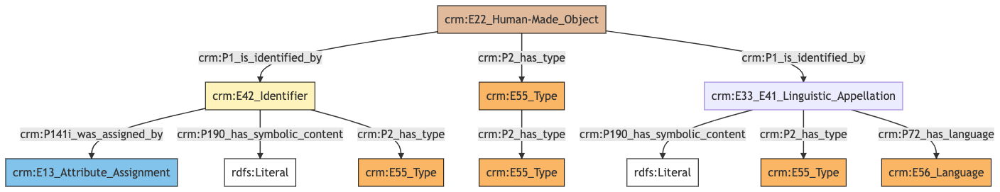
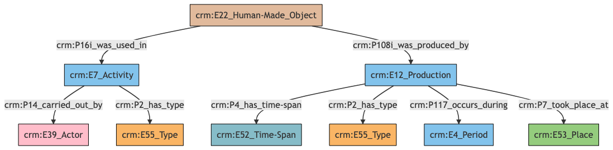
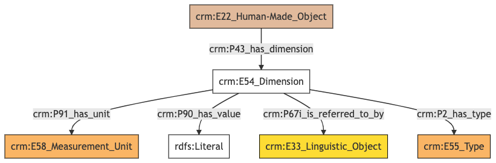
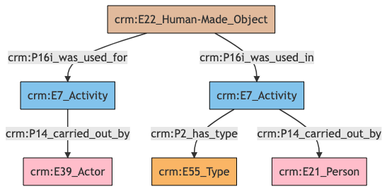
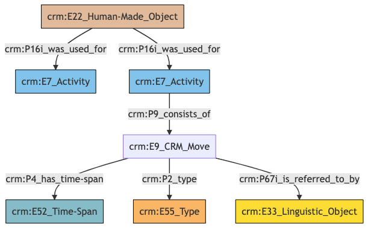
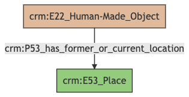
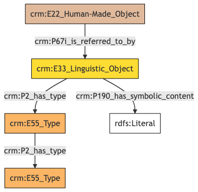
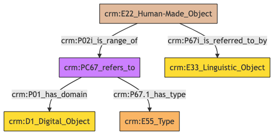

Artwork
Author: Denitsa Nenova, George Bruseker
Version: 1.0
The Artwork model is intended to enable the representation and sharing of data relevant to human-made, physical items, predominantly works of art such as drawings, painting, prints, etc. The Artwork reference data model consists of standard fields describing and defining the object in a cultural heritage data system. The current model intends to accomodate information about the physical work of art at a general description level following established ways of data recording in a museum inventory environment. It is based on standard semantic mappings using CIDOC-CRM and an initial artwork dataset curated by the Philadelphia Museum of Art. Besides the direct mapping of existing artwork related data, the model offers extended fields for additional information in the future having the capacity of digitally born data.
| Name | URI | |
|---|---|---|
| Root Ontology Node | E22 Human-Made Object | https://cidoc-crm.org/Entity/E22-Human-Made-Object/version-7.1.1 |
| Type Differentiator | works of art | http://vocab.getty.edu/aat/300133025 |
Model Sections Description
The fields used to describe an artwork can be functionally grouped in generic categories allowing for a convenient navigation with an individual entry. The information categoreis applicable to the Artwork refernce model are listed in the table below.
| Information Category | Information Collections | Description |
|---|---|---|
| Names and Classifications | Names/Identifiers/Types/Terms | The researcher can document various names, titles, types and any unclassified otherwise terms assigned to the Artwork. |
| Existence | Creation | The researcher can document the events related to the production of an Artwork. |
| Substance | Dimensions | The researcher can document various physical descriptive information about the Artwork. |
| Actor Relations | Activity Actor/Curator | The researcher can document variuos relationships between the Artwork and an actor. |
| Events | Moves/Activity Used In (Exhibitions) | The researcher can document the events related to the move from one location to another or different activies where the Artwork was used such as exhibitions. |
| Location | Location | The researcher can document the current or former location of the Artwork. |
| Description | Description | The researcher can document various free-text descriptions of the Artwork. |
| Documentation | Reference/Image/File | The researcher can document citations relative to the Artwork and link to different documents or images representing the Artwork |
Artwork Names and Classifications
The attribution of names and types to an Artwork, as with other entities, is a basic human activity. A chief factor in disambiguating Artworks lies in understanding the various names and identifiers that have been given to them at different moments in their individual histories. Likewise, additional classifiers of the Artwork give important distinguishing characteristics.
| Filed ID | Name | Description | Data Type | CRM Path |
|---|---|---|---|---|
| LAF.6 | Title | This field is used to record the string value of the name attributed to the documented Artwork. | String | ->p1->E33_E41[4_1]->p190->rdf:literal |
| LAF.5 | Title Type | This field is used to record the type of the name attributed to the documented Artwork. | Concept | ->p1->E33_41[4_1]->p2->E55[5_1] |
| LAF.7 | Title Language | This field is used to record the language of the name attributed to the documented Artwork. | Concept | ->p1->E33_E41[4_1]->p72->E56[7_1] |
| LAF.10 | Identifier | This field is used to record an identifier attributed to the documented Artwork. | String | ->p1->E42[8_1]->p190->rdf:literal |
| LAF.9 | Identifier Type | This field is used to record the type of the identifier attributed to the documented Artwork. | Concept | ->p1->E42[8_1]->p2->E55[9_1] |
| LAF.434 | Identifier Assigned By | This field is used to indicate the details of the data assignment of this identifier to the documented Artwork. | Collection [Data Assignment] | ->p1->E42[8_1]->p141i->E13[434_1] |
| LAF.11 | Term | This field is used to record the formal type of the documented Artwork. | Concept | ->p2->E55[11_1] |
| LAF.12 | Term Type | This field is used to record the metatype attributed to a formal classification. The function of a metatype is to enable the programmatic distinction between different kinds of type applied to the same documented Artwork. | Concept | ->p2->E55[11_1]->p2->E55 [12_1] |
- Artwork Names and Classifications Ontology Graph

- Artwork Names and Classifications RDF
@prefix crm: <http://www.cidoc-crm.org/cidoc-crm/> .
@prefix rdfs: <http://www.w3.org/2000/01/rdf-schema#> .
<https://pma.us/models/physical_thing/E22> a crm:E22_Human-Made_Object ;
crm:P1_is_identified_by <https://linked.art/example/conceptual_object/4_1>,
<https://linked.art/example/conceptual_object/8_1> ;
crm:P2_has_type <https://linked.art/example/type/11_1> .
<http://vocab.getty.edu/page/aat/300404670> a crm:E55_Type ;
rdfs:label "preferred terms" .
<https://linked.art/example/conceptual_object/4_1> a crm:E33_E41_Linguistic_Appellation ;
crm:P190_has_symbolic_content "Name_string_value" ;
crm:P2_has_type <http://vocab.getty.edu/page/aat/300404670> ;
crm:P72_has_language <https://linked.art/example/type/7_1> .
<https://linked.art/example/conceptual_object/8_1> a crm:E42_Identifier ;
crm:P141i_was_assigned_by <https://linked.art/example/event/434_1> ;
crm:P190_has_symbolic_content "Identifier_value_content" ;
crm:P2_has_type <https://linked.art/example/identifier/9_1> .
<https://linked.art/example/event/434_1> a crm:E13_Attribute_Assignment .
<https://linked.art/example/identifier/9_1> a crm:E55_Type .
<https://linked.art/example/type/11_1> a crm:E55_Type ;
crm:P2_has_type <https://linked.art/example/type/12_1> .
<https://linked.art/example/type/12_1> a crm:E55_Type .
<https://linked.art/example/type/7_1> a crm:E56_Language .
- Artwork Names and Classifications JOSN-LD
{
"@context": "https://linked.art/ns/v1/linked-art.json",
"@graph": [
{
"classified_as": [
"https://linked.art/example/type/12_1"
],
"id": "https://linked.art/example/type/11_1",
"type": "Type"
},
{
"id": "https://linked.art/example/event/434_1",
"type": "AttributeAssignment"
},
{
"id": "https://linked.art/example/type/12_1",
"type": "Type"
},
{
"id": "https://linked.art/example/identifier/9_1",
"type": "Type"
},
{
"classified_as": [
"http://vocab.getty.edu/page/aat/300404670"
],
"content": "Name_string_value",
"id": "https://linked.art/example/conceptual_object/4_1",
"language": [
"https://linked.art/example/type/7_1"
],
"type": "Name"
},
{
"_label": "preferred terms",
"id": "http://vocab.getty.edu/page/aat/300404670",
"type": "Type"
},
{
"id": "https://linked.art/example/type/7_1",
"type": "Language"
},
{
"classified_as": [
"https://linked.art/example/type/11_1"
],
"id": "https://pma.us/models/physical_thing/E22",
"identified_by": [
"https://linked.art/example/conceptual_object/4_1",
"https://linked.art/example/conceptual_object/8_1"
],
"type": "HumanMadeObject"
},
{
"assigned_by": [
"https://linked.art/example/event/434_1"
],
"classified_as": [
"https://linked.art/example/identifier/9_1"
],
"content": "Identifier_value_content",
"id": "https://linked.art/example/conceptual_object/8_1",
"type": "Identifier"
}
]
}
Artwork Existence
Of essential importance in identifying and tracking Artworks is information pertaining to their existence in time, particularly information regarding the creation of the Artwork as a human-made object.
| Filed ID | Name | Description | Data Type | CRM Path |
|---|---|---|---|---|
| LAF.296 | Creation Period | This field is used to link the documented production activity of an Artwork to the period during which it occurred. | Reference Model [Period] | ->P108i->E12[295_1]->P117->E4[296_1] |
| LAF.303 | Creation Type | This field is used to record the formal type of the documented production activity of an Artwork. | Concept | ->P108i->E12[295_1]->P2->E55[303_1] |
| LAF.295 | Creation Place | This field is used to link the documented production activity of an Artwork to a location at which it was carried out. | Reference Model [Place] | ->P108i->E12[295_1]->P7->E53[295_2] |
| LAF.302 | Creation Date | This field is used to link the documented production activity of an Artwork to an instance of time-span recording the temporal extent of the activity. | Collection [Timespan] | ->P108i->E12[295_1]->P4->E52[302_1] |
| PMAF.73 | Role | This field is used to document the type of activity where the documented of an Artwork was used. | Concept | ->p16i->E7[A73_1]->p2->E55[A73_2] |
| PMAF.74 | Constituent | This field is used to document an actor involved in the type of activity where the documented Artwork was used. | Reference Model [Person/Group] | ->p16i->E7[A73_1]->p14->E39[A74_1] |
- Artwork Existence Ontology Graph

- Artwork Existence RDF
@prefix crm: <http://www.cidoc-crm.org/cidoc-crm/> .
<https://pma.us/models/physical_thing/E22> a crm:E22_Human-Made_Object ;
crm:P108i_was_produced_by <https://linked.art/example/event/295_1> ;
crm:P16i_was_used_in <http://pma.us/event/A73_1> .
<http://pma.us/actor/A74_1> a crm:E39_Actor .
<http://pma.us/event/A73_1> a crm:E7_Activity ;
crm:P14_carried_out_by <http://pma.us/actor/A74_1> ;
crm:P2_has_type <http://pma.us/type/A73_2> .
<http://pma.us/type/A73_2> a crm:E55_Type .
<https://linked.art/example/event/295_1> a crm:E12_Production ;
crm:P117_occurs_during <https://linked.art/example/event/296_1> ;
crm:P2_has_type <https://linked.art/example/type/303_1> ;
crm:P4_has_time-span <https://linked.art/example/time_span/302_1> ;
crm:P7_took_place_at <https://linked.art/example/place/295_2> .
<https://linked.art/example/event/296_1> a crm:E4_Period .
<https://linked.art/example/place/295_2> a crm:E53_Place .
<https://linked.art/example/time_span/302_1> a crm:E52_Time-Span .
<https://linked.art/example/type/303_1> a crm:E55_Type .
- Artwork Existence JSON-LD
{
"@context": "https://linked.art/ns/v1/linked-art.json",
"@graph": [
{
"crm:P16i_was_used_in": {
"id": "http://pma.us/event/A73_1"
},
"id": "https://pma.us/models/physical_thing/E22",
"produced_by": "https://linked.art/example/event/295_1",
"type": "HumanMadeObject"
},
{
"id": "https://linked.art/example/type/303_1",
"type": "Type"
},
{
"id": "https://linked.art/example/time_span/302_1",
"type": "TimeSpan"
},
{
"id": "https://linked.art/example/place/295_2",
"type": "Place"
},
{
"id": "https://linked.art/example/event/296_1",
"type": "Period"
},
{
"carried_out_by": [
"http://pma.us/actor/A74_1"
],
"classified_as": [
"http://pma.us/type/A73_2"
],
"id": "http://pma.us/event/A73_1",
"type": "Activity"
},
{
"classified_as": [
"https://linked.art/example/type/303_1"
],
"crm:P117_occurs_during": {
"id": "https://linked.art/example/event/296_1"
},
"id": "https://linked.art/example/event/295_1",
"timespan": "https://linked.art/example/time_span/302_1",
"took_place_at": [
"https://linked.art/example/place/295_2"
],
"type": "Production"
},
{
"id": "http://pma.us/type/A73_2",
"type": "Type"
},
{
"id": "http://pma.us/actor/A74_1",
"type": "Actor"
}
]
}
Artwork Substance
The analysis and understanding of an Artwork depends also on our knowledge of its materiality and physical characteristics. The category of substance brings together descriptors which are relevant to this form of analysis. Particularly, it groups information having to do with the composition and measurable aspects of the physical form of the Artwork.
| Filed ID | Name | Description | Data Type | CRM Path |
|---|---|---|---|---|
| LAF.453 | Dimension Statement | This field is used to link the dimension of a documented Artwork to a statement that describes it. | Collection [Statement] | ->p43->E54[98_1]->P67i->E33[453_1] |
| LAF.99 | Dimension Unit | This field is used to record the unit for the documented instance of dimension of the documented Artwork. | Concept | ->p43->E54[98_1]->p91->E58[99_1] |
| LAF.101 | Dimension Value | This field is used to record the value for the documented instance of dimension of the documented Artwork. | Integer | ->p43->E54[98_1]->p90->rdf:literal |
| LAF.104 | Dimension Type | This field is used to record the formal type of the documented dimension of the documented Artwork. | Concept | ->p43->E54[98_1]->p2->E55[104_1] |
- Artwork Substance Ontology Graph

- Artwork Substance RDF
@prefix crm: <http://www.cidoc-crm.org/cidoc-crm/> .
<https://pma.us/models/physical_thing/E22> a crm:E22_Human-Made_Object ;
crm:P43_has_dimension <https://linked.art/example/dimension/98_1> .
<https://linked.art/example/conceptual_object/453_1> a crm:E33_Linguistic_Object .
<https://linked.art/example/dimension/98_1> a crm:E54_Dimension ;
crm:P2_has_type <https://linked.art/example/type/104_1> ;
crm:P67i_is_referred_to_by <https://linked.art/example/conceptual_object/453_1> ;
crm:P90_has_value "integer" ;
crm:P91_has_unit <https://linked.art/example/type/99_1> .
<https://linked.art/example/type/104_1> a crm:E55_Type .
<https://linked.art/example/type/99_1> a crm:E58_Measurement_Unit .
- Artwork Substance JSON-LD
{
"@context": "https://linked.art/ns/v1/linked-art.json",
"@graph": [
{
"dimension": [
"https://linked.art/example/dimension/98_1"
],
"id": "https://pma.us/models/physical_thing/E22",
"type": "HumanMadeObject"
},
{
"id": "https://linked.art/example/conceptual_object/453_1",
"type": "LinguisticObject"
},
{
"id": "https://linked.art/example/type/104_1",
"type": "Type"
},
{
"classified_as": [
"https://linked.art/example/type/104_1"
],
"id": "https://linked.art/example/dimension/98_1",
"referred_to_by": [
"https://linked.art/example/conceptual_object/453_1"
],
"type": "Dimension",
"unit": "https://linked.art/example/type/99_1",
"value": "integer"
},
{
"id": "https://linked.art/example/type/99_1",
"type": "MeasurementUnit"
}
]
}
Artwork Actor Relations
The connection between the Artwork and different actors, such as creators and donors, provides another important set of descriptors for identifying and tracing an Artwork.
| Filed ID | Name | Description | Data Type | CRM Path |
|---|---|---|---|---|
| PMAF.73 | Role | This field is used to document the type of activity where the documented Artwork was used. | Concept | ->p16i->E7[A73_1]->p2->E55[A73_2] |
| LAF.61 | Department | This field is used to link the documented Artwork curation activity to an actor responsible for carrying it out. | Reference Model [Group] | ->P16i->E7[58_1]->P14->E39[61_1] |
| PMAF.74 | Constituent | This field is used to document an actor involved in the type of activity where the documented Artwork was used. | Reference Model [Person] | ->p16i->E7[A73_1]->p14->E39[A74_1] |
- Artwork Actor Relations Ontology Graph

- Artwork Actor Relations RDF
@prefix crm: <http://www.cidoc-crm.org/cidoc-crm/> .
<https://pma.us/models/physical_thing/E22> a crm:E22_Human-Made_Object ;
crm:P16i_was_used_for <https://linked.art/example/event/58_1> ;
crm:P16i_was_used_in <http://linked.art/example/event/A73_1> .
<http://linked.art/example/actor/A74_1> a crm:E21_Person .
<http://linked.art/example/event/A73_1> a crm:E7_Activity ;
crm:P14_carried_out_by <http://linked.art/example/actor/A74_1> ;
crm:P2_has_type <http://linked.art/example/type/A73_2> .
<http://linked.art/example/type/A73_2> a crm:E55_Type .
<https://linked.art/example/actor/61_1> a crm:E39_Actor .
<https://linked.art/example/event/58_1> a crm:E7_Activity ;
crm:P14_carried_out_by <https://linked.art/example/actor/61_1> .
- Artwork Actor Relations JSON-LD
{
"@context": "https://linked.art/ns/v1/linked-art.json",
"@graph": [
{
"carried_out_by": [
"https://linked.art/example/actor/61_1"
],
"id": "https://linked.art/example/event/58_1",
"type": "Activity"
},
{
"id": "https://linked.art/example/actor/61_1",
"type": "Actor"
},
{
"id": "http://linked.art/example/type/A73_2",
"type": "Type"
},
{
"crm:P16i_was_used_in": {
"id": "http://linked.art/example/event/A73_1"
},
"id": "https://pma.us/models/physical_thing/E22",
"type": "HumanMadeObject",
"used_for": [
"https://linked.art/example/event/58_1"
]
},
{
"carried_out_by": [
"http://linked.art/example/actor/A74_1"
],
"classified_as": [
"http://linked.art/example/type/A73_2"
],
"id": "http://linked.art/example/event/A73_1",
"type": "Activity"
},
{
"id": "http://linked.art/example/actor/A74_1",
"type": "Person"
}
]
}
Artwork Events
This category brings together typical events in which an Artwork may have been involved through the course of its history. At present this enables the documentation of Artwork move and transfer and its participation in exhibitions.
| Filed ID | Name | Description | Data Type | CRM Path |
|---|---|---|---|---|
| PMAF.79 | Transfer Date | This field is used to document the timespan of a move event associated with the documented Artwork. | Collection [Timespan] | ->p16i_E7[A79_1]->p9->E9[A79_2]->p4->E52[A79_3] |
| PMAF.80 | Transfer Status | This field is used to document a statement about the move event associated with the documented Artwork. | Collection [Statement] | ->p16i_E7[A79_1]->p9->E9[A79_2]->p67i->E33[A80_1] |
| PMAF.81 | Transfer Purpose | This field is used to document the type of the move event associated with the documented Artwork. | Concept | ->p16i_E7[A79_1]->p9->E9[A79_2]->p2->E55[A81_1] |
| LAF.57 | Part of Exhibition | This field is used to link the documented Artwork to an activity in which it was used. | Reference Model [Exhibition] | ->P16i->E7[57_1] |
- Artwork Events Ontology Graph

- Artwork Events RDF
@prefix crm: <http://www.cidoc-crm.org/cidoc-crm/> .
<https://pma.us/models/physical_thing/E22> a crm:E22_Human-Made_Object ;
crm:P16i_was_used_for <http://linked.art/example/event/A79_1>,
<https://linked.art/example/event/57_1> .
<http://linked.art/example/conceptual_object/A80_1> a crm:E33_Linguistic_Object .
<http://linked.art/example/event/A79_1> a crm:E7_Activity ;
crm:P9_consists_of <http://linked.art/example/event/A79_2> .
<http://linked.art/example/event/A79_2> a crm:E9_CRM_Move ;
crm:P2_type <http://linked.art/example/type/A81_1> ;
crm:P4_has_time-span <http://linked.art/example/time_span/A79_3> ;
crm:P67i_is_referred_to_by <http://linked.art/example/conceptual_object/A80_1> .
<http://linked.art/example/time_span/A79_3> a crm:E52_Time-Span .
<http://linked.art/example/type/A81_1> a crm:E55_Type .
<https://linked.art/example/event/57_1> a crm:E7_Activity .
- Artwork Events JSON-LD
{
"@context": "https://linked.art/ns/v1/linked-art.json",
"@graph": [
{
"crm:P9_consists_of": {
"id": "http://linked.art/example/event/A79_2"
},
"id": "http://linked.art/example/event/A79_1",
"type": "Activity"
},
{
"id": "http://linked.art/example/time_span/A79_3",
"type": "TimeSpan"
},
{
"id": "https://linked.art/example/event/57_1",
"type": "Activity"
},
{
"id": "http://linked.art/example/type/A81_1",
"type": "Type"
},
{
"id": "https://pma.us/models/physical_thing/E22",
"type": "HumanMadeObject",
"used_for": [
"https://linked.art/example/event/57_1",
"http://linked.art/example/event/A79_1"
]
},
{
"crm:P2_type": {
"id": "http://linked.art/example/type/A81_1"
},
"id": "http://linked.art/example/event/A79_2",
"referred_to_by": [
"http://linked.art/example/conceptual_object/A80_1"
],
"timespan": "http://linked.art/example/time_span/A79_3",
"type": "crm:E9_CRM_Move"
},
{
"id": "http://linked.art/example/conceptual_object/A80_1",
"type": "LinguisticObject"
}
]
}
Artwork Location
The documentation of location aids in tracking the present location of individual Artworks within an institution.
| Filed ID | Name | Description | Data Type | CRM Path |
|---|---|---|---|---|
| PMAF.9 | Crate ID | This field is used to record the internal location of the documented Artwork. | Reference Model | ->P53->E53[A9_1] |
- Artwork Events Ontology Graph

- Artwork Events RDF
@prefix crm: <http://www.cidoc-crm.org/cidoc-crm/> .
<https://pma.us/models/physical_thing/E22> a crm:E22_Human-Made_Object ;
crm:P53_has_former_or_current_location <https://pma.us/place/A9_1> .
<https://pma.us/place/A9_1> a crm:E53_Place .
- Artwork Location JSON-LD
{
"@context": "https://linked.art/ns/v1/linked-art.json",
"@graph": [
{
"former_or_current_location": [
"https://pma.us/place/A9_1"
],
"id": "https://pma.us/models/physical_thing/E22",
"type": "HumanMadeObject"
},
{
"id": "https://pma.us/place/A9_1",
"type": "Place"
}
]
}
Artwork Description
Artworks are the subjects of innumerable descriptions that provide a wide range of information with regards to the aesthetic and historical importance of the work. Such descriptions are of use in a scholarly understanding of an object just in case we are able to track the provenance of such elocutions in a systematic fashion. Such an aim drives the need for the tracking of description information as a separate category.
| Filed ID | Name | Description | Data Type | CRM Path |
|---|---|---|---|---|
| LAF.15 | Statement | This field is used to record the actual textual content of the statement describing the documented Artwork. | String | ->p67i->E33[13_1]->p190->rdf:literal |
| LAF.14 | Statement Type | This field is used to record the formal type of the statement made about the documented Artwork. | Concept | ->p67i->E33[13_1]->p2->E55[14_1] |
- Artwork Description Ontology Graph

- Artwork Description RDF
@prefix crm: <http://www.cidoc-crm.org/cidoc-crm/> .
<https://pma.us/models/physical_thing/E22> a crm:E22_Human-Made_Object ;
crm:P67i_is_referred_to_by <https://linked.art/example/conceptual_object/13_1> .
<http://vocab.getty.edu/aat/300418049> a crm:E55_Type .
<https://linked.art/example/conceptual_object/13_1> a crm:E33_Linguistic_Object ;
crm:P190_has_symbolic_content "Statement_string_content" ;
crm:P2_has_type <https://linked.art/example/type/14_1> .
<https://linked.art/example/type/14_1> a crm:E55_Type ;
crm:P2_has_type <http://vocab.getty.edu/aat/300418049> .
- Artwork Description JSON-LD
{
"@context": "https://linked.art/ns/v1/linked-art.json",
"@graph": [
{
"id": "https://pma.us/models/physical_thing/E22",
"referred_to_by": [
"https://linked.art/example/conceptual_object/13_1"
],
"type": "HumanMadeObject"
},
{
"classified_as": [
"https://linked.art/example/type/14_1"
],
"content": "Statement_string_content",
"id": "https://linked.art/example/conceptual_object/13_1",
"type": "LinguisticObject"
},
{
"id": "http://vocab.getty.edu/aat/300418049",
"type": "Type"
},
{
"classified_as": [
"http://vocab.getty.edu/aat/300418049"
],
"id": "https://linked.art/example/type/14_1",
"type": "Type"
}
]
}
Artwork Documentation
This information category unites referential information about the documented Artwork, providing contextual data about it.
| Filed ID | Name | Description | Data Type | CRM Path |
|---|---|---|---|---|
| LAF.173 | Bibliography | This field is used to link the documented Artwork to an instance of textual work in which it is documented or mentioned. | Reference Model [Textual Work] | ->P67i->E33[173_1] |
| PMAF.83 | Digital Object | This field is used to link to an instance of digital resource which serves as a digital reference document for the documented Artwork. | Reference Model [Digital Object] | ->P02i->PC67[A83_1]->P01->D1[A83_2] |
| PMAF.84 | Digital Object Type | This field is used to link to a type record which indicates the kind of reference supported by the digital resource that serves as a reference for the documented Artwork. | Concept | ->P02i->PC67[A83_1]->P67.1->E55[A84_1] |
- Artwork Documentation Ontology Graph

- Artwork Documentation RDF
@prefix crm: <http://www.cidoc-crm.org/cidoc-crm/> .
<https://pma.us/models/physical_thing/E22> a crm:E22_Human-Made_Object ;
crm:P02i_is_range_of <https://linked.art/example/reified_property/A83_1> ;
crm:P67i_is_referred_to_by <https://linked.art/example/conceptual_object/173_1> .
<https://linked.art/example/conceptual_bject/A83_2> a crm:E73_Information_object .
<https://linked.art/example/conceptual_bject/A84_1> a crm:E55_Type .
<https://linked.art/example/conceptual_object/173_1> a crm:E33_Linguistic_Object .
<https://linked.art/example/reified_property/A83_1> a crm:PC67_refers_to ;
crm:P01_has_domain <https://linked.art/example/conceptual_bject/A83_2> ;
crm:P67.1_has_type <https://linked.art/example/conceptual_bject/A84_1> .
- Artwork Documentation JSON-LD
{
"@context": "https://linked.art/ns/v1/linked-art.json",
"@graph": [
{
"crm:P02i_is_range_of": {
"id": "https://linked.art/example/reified_property/A83_1"
},
"id": "https://pma.us/models/physical_thing/E22",
"referred_to_by": [
"https://linked.art/example/conceptual_object/173_1"
],
"type": "HumanMadeObject"
},
{
"crm:P01_has_domain": {
"id": "https://linked.art/example/conceptual_bject/A83_2"
},
"crm:P67.1_has_type": {
"id": "https://linked.art/example/conceptual_bject/A84_1"
},
"id": "https://linked.art/example/reified_property/A83_1",
"type": "crm:PC67_refers_to"
},
{
"id": "https://linked.art/example/conceptual_bject/A84_1",
"type": "Type"
},
{
"id": "https://linked.art/example/conceptual_object/173_1",
"type": "LinguisticObject"
},
{
"id": "https://linked.art/example/conceptual_bject/A83_2",
"type": "crm:E73_Information_object"
}
]
}